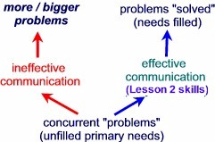

|
Help each other stay aware of the difference between what you're communicating about (your content), and how you're com-municating (your process) - e.g. arguing vs. problem-solving. Growing your com-munication knowledge and skills together (Les-son 2), and keeping your true Self in charge (Lesson 1) will help you do this.  |